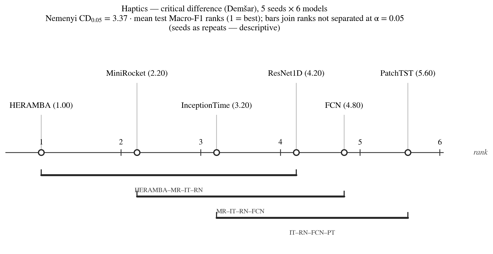

| Model | Mean rank | Mean test Macro-F1 |
|---|---|---|
| HERAMBA | 1.00 | 0.5315 |
| MiniRocket | 2.20 | 0.4974 |
| InceptionTime | 3.20 | 0.4404 |
| ResNet1D | 4.20 | 0.3986 |
| FCN | 4.80 | 0.3888 |
| PatchTST | 5.60 | 0.3331 |
Reading: rank 1 (best) is on the right. Models joined by a horizontal bar have mean-rank differences below the Nemenyi CD (3.37) and are not distinguishable at α = 0.05 under this adaptation. With k = 6 models and only n = 5 seeds the CD is large, so adjacent-model bars overlap heavily: {HERAMBA, MiniRocket, InceptionTime, ResNet1D}, {MiniRocket, InceptionTime, ResNet1D, FCN}, {InceptionTime, ResNet1D, FCN, PatchTST}. HERAMBA is ranked 1st on all 5 seeds (rank vector [1,1,1,1,1]) and PatchTST last on 4 of 5 — the ordering is perfectly stable across seeds, which is what the Friedman exact p = 1.0 reflects under this small-n adaptation (the rank configuration is one of the most probable under H0 given so few blocks; the chi2 statistic 2622.1 is an artifact of zero within-seed dispersion, and the Iman–Davenport F correction is invalid here). Treat this diagram as a descriptive summary of seed-wise rank stability, not a benchmark-wide significance claim.